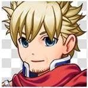
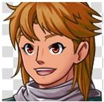
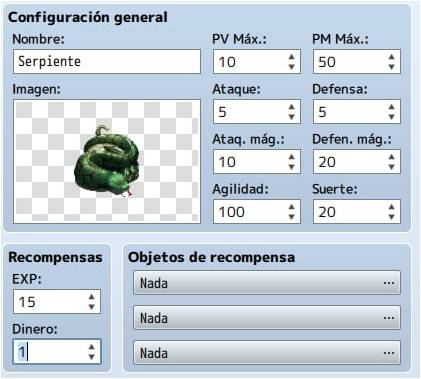
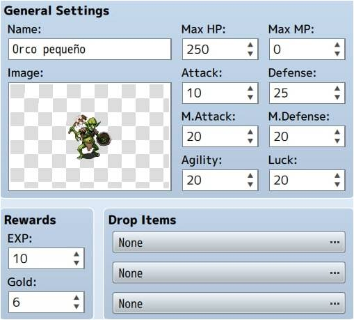
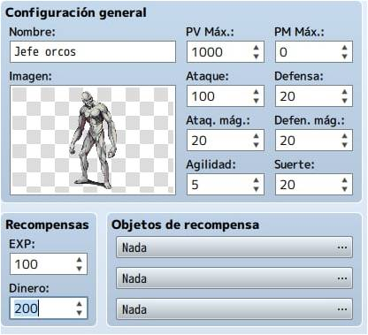
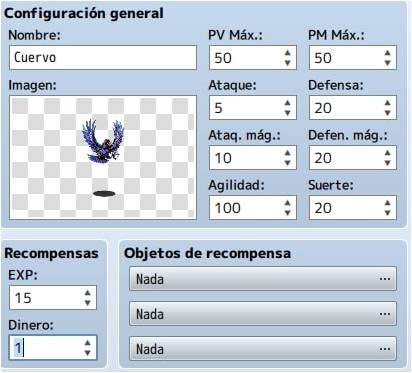
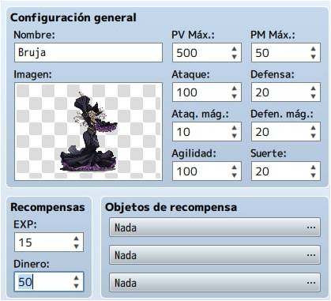
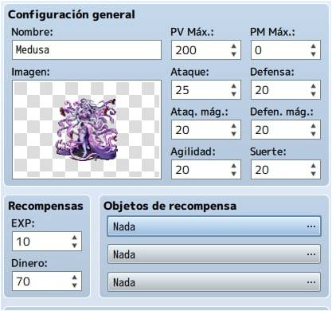
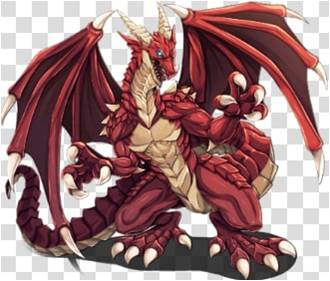

Personajes
Siul
Siul es uno de los protagonistas que podemos seleccionar para participar en este juego.

Leugim
Leugim es el acompañante que podemos seleccionar para nuestro protagonista en el juego.

Monstruos y estadisticas
Serpiente
La serpiente la encontraremos sobre todo en los primeros escenarios
ya que no es un rival muy complicado.

Orco Pequeño
El orco pequeño no es un rival muy duro pero es muy ágil.

Jefe de los Orcos
El jefe de los orcos será al primer miniboss que nos enfrentaremos.

Cuervos
Los cuervos son unos rivales que no son muy peligrosos
por su bajo ataque y su baja defensa, pero
es un rival complicado por estar en el aire y por su rapidez.

Bruja
La bruja es un rival muy complicado que hace daño a largo alcance.

Medusa
La Medusa es un rival que tiene un gran ataque al igual que la defensa.

Dragon
El dragón será el boss final al que nos tendremos que enfrentar para pasarnos el juego.
